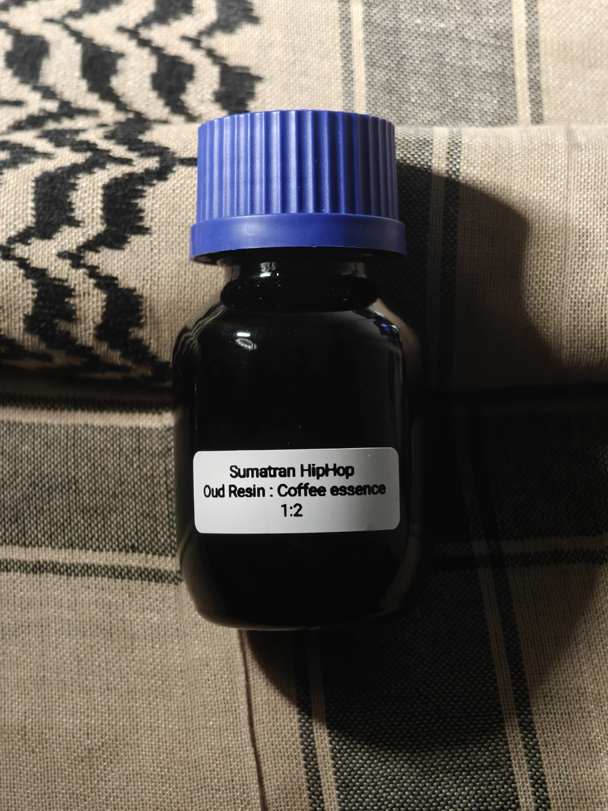

Sumatran HipHop
Sumatran HipHop named after Sumatra, Indonesia - it's a mix of a Sumatran coffee semi-absolute (an essence) with solid Sumatran oud resin.
During my post-work coffee, I came across an Indonesia coffee grown by a women's coffee group with notes of "smoked pineapple" and my immediate thought was "I need this in a perfume!"
6 months maceration of 1:2 ratio of coffee to ethanol, taking methodology from the last tincture, I went ahead and did some innovation this time around.
After drying 84% of ethanol, I was left with 40g of workable material that was a mix of pure coffee extract and liquid ethanol
To the 40g, I diluted 16g of solid oud resin, a 2:5 ratio of resin to coffee
Sumatran HipHop opens like a warm cup of coffee, the oud resin sweetens the cup, and the physical viscosity of the oud gives it a soft rounded texture -
applied to the wrist is almost reminiscent of a cafe during a cold nights; warm, homey, and very comforting.